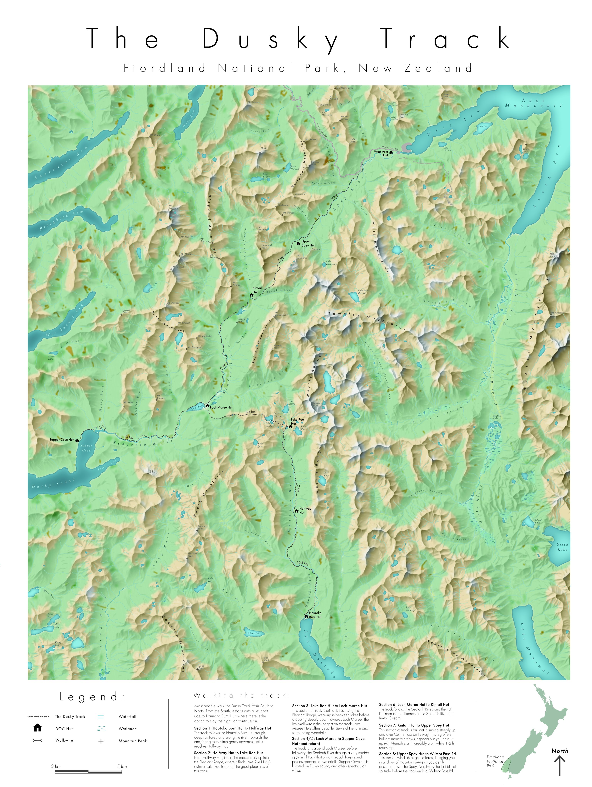

The Dusky Track
A shaded-relief map of the Dusky Track — an 84 kilometer route described as New Zealand’s hardest tramp — with huts marked along the route, lakes, and rivers.

A shaded-relief map of the Dusky Track — an 84 kilometer route described as New Zealand’s hardest tramp — with huts marked along the route, lakes, and rivers.